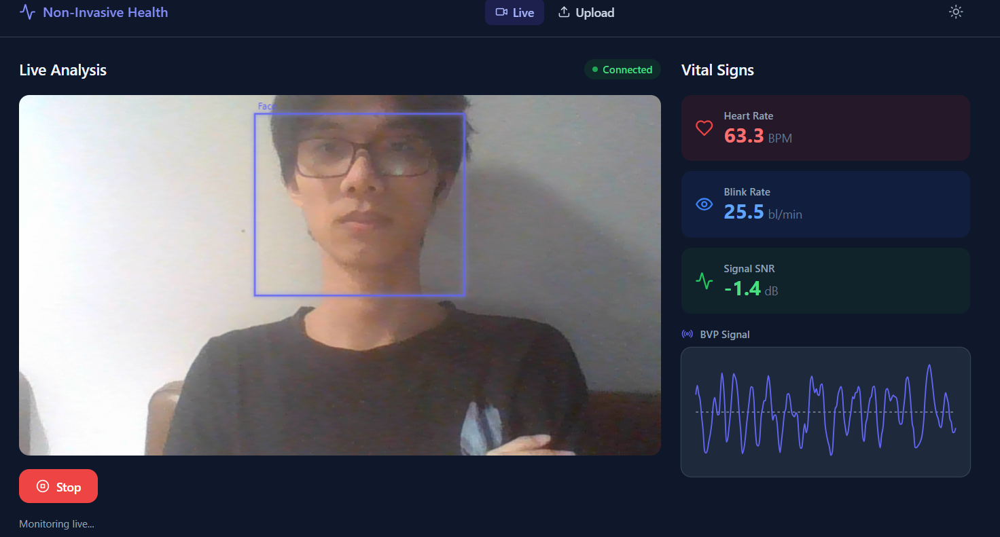
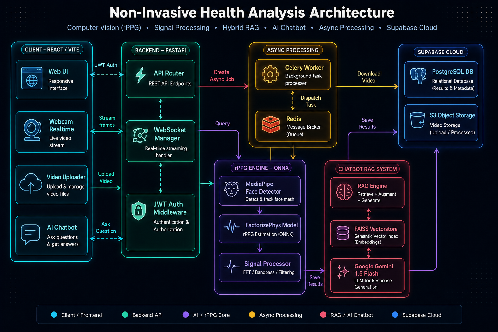
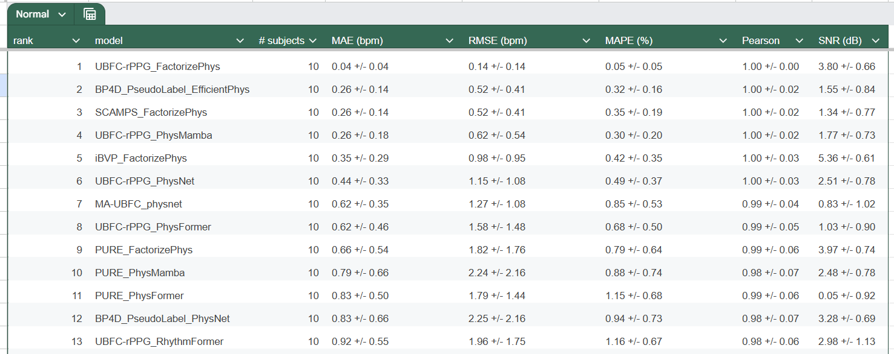
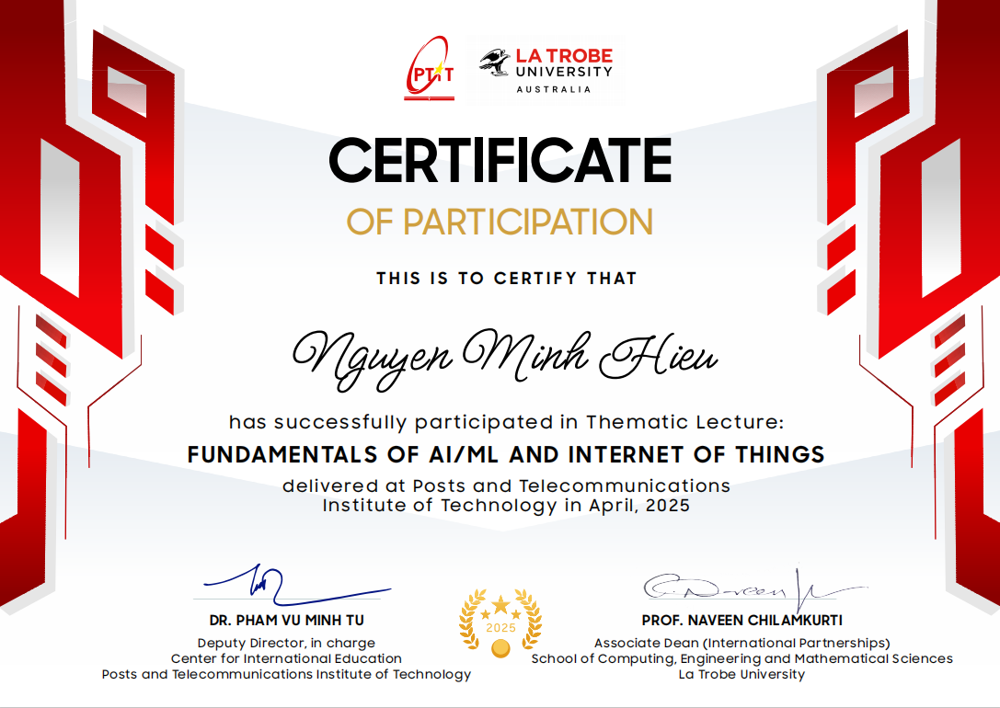
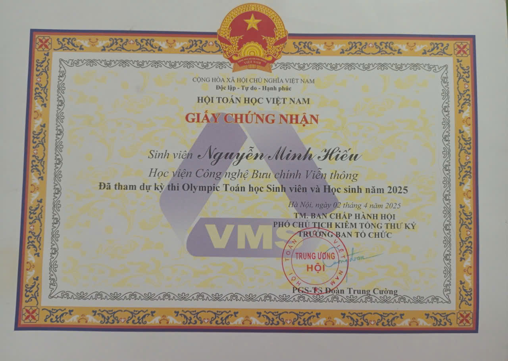

|
Computer Science student at PTIT passionate about building intelligent systems — from real-time health monitoring with rPPG to RAG-powered chatbots.
class Developer:
def __init__(self):
self.name = "Nguyen Minh Hieu"
self.role = "AI/ML Engineer"
self.languages = ["Python", "C/C++"]
self.interests = [
"Computer Vision",
"NLP & RAG",
"Health Tech"
]
def say_hi(self):
print("Welcome to my portfolio!")
# Let's connect! 🚀
me = Developer()
me.say_hi()I'm a Computer Science student at the Posts and Telecommunications Institute of Technology (PTIT) in Ha Noi, Viet Nam. My passion lies at the intersection of Artificial Intelligence, Machine Learning, and real-world applications.
As a member of the PTIT AI Young Talent Club, I conduct research on contactless health monitoring technologies (rPPG) and explore cutting-edge LLM training methodologies including RLHF pipelines and efficient fine-tuning.
I love building end-to-end systems that combine deep learning models with robust backend infrastructure — from real-time video processing pipelines to RAG-powered chatbots.
Bachelor of Computer Science
Ha Dong, Ha Noi
Nov. 2025 — Present
A full-stack biometric measurement platform that extracts heart rate, HRV, blink rate, and BVP signals from facial videos — featuring real-time webcam analysis via WebSocket, offline video processing with an async job queue, and an AI medical chatbot powered by Advanced RAG.

Designed with 4 main layers: Computer Vision & rPPG, Signal Processing, AI/NLP (RAG Chatbot), and Web Fullstack — connected through WebSocket, REST API, and a Celery + Redis distributed job queue.

get_bandpass_by_age().
ws://host/ws/stream) accepts live webcam frames from the browser, returning face bounding box and vitals in real-time.
{"type":"frame","data":"..."} (base64 JPEG). Server responds with face / vitals / error messages.
useWebSocket.js + useWebcam.js) handle camera capture, frame encoding, and reconnection logic.
POST /video/upload-async receives video upload → stores in S3 Object Storage (Supabase) → creates job record in PostgreSQL → dispatches task to Celery + Redis queue.
GET /video/jobs/{job_id} — Frontend polls every 2 seconds until completion.
Medical_book.pdf using document loader — supports PDF, Markdown, and plain text formats.
feedback_store.py) stores chatbot quality ratings in Supabase for continuous improvement.
Evaluated on 10 users under 3 practical conditions. The system achieves high accuracy (error < 2 bpm) even in noisy environments.



I'm always open to new opportunities, collaborations, and interesting conversations. Feel free to reach out!